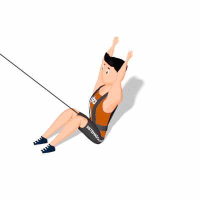

Sit Up com Tração Elástica

Exercício de resistência elástica para fortalecimento e hipertrofia da região abdominal.
Ficha Técnica
Tipo: Funcional
Grupo Muscular: Abdome
Aparelho: Nenhum
Músculos: Nenhum
Como realizar
- Prenda frontalmente o colete de tração elástica em seu tronco;
- Na posição de partida você está com as costas retas deitado no chão;
- As mãos estendidas atrás da cabeça, as pernas estão dobradas;
- Realize a flexão do tronco, aproximando o peitoral aos joelhos, concentre todo o esforço nos músculos do abdome;
- Utilize os braços para auxiliar no impulso;
- Em seguida, a parte superior do corpo volta para a posição inicial.
 RC STORE
RC STORE